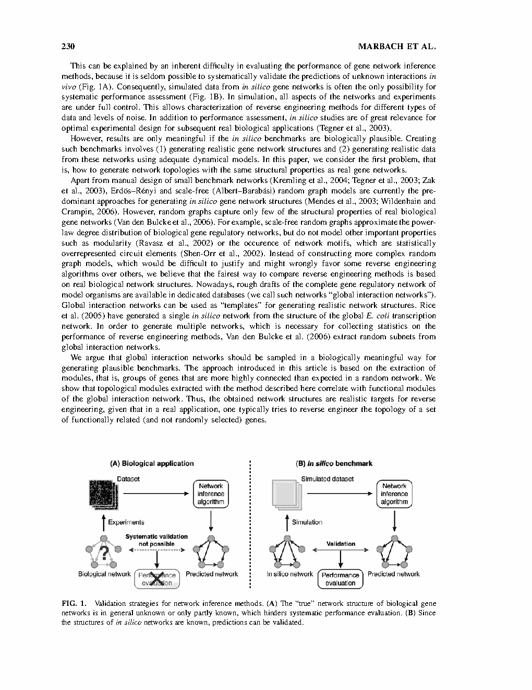
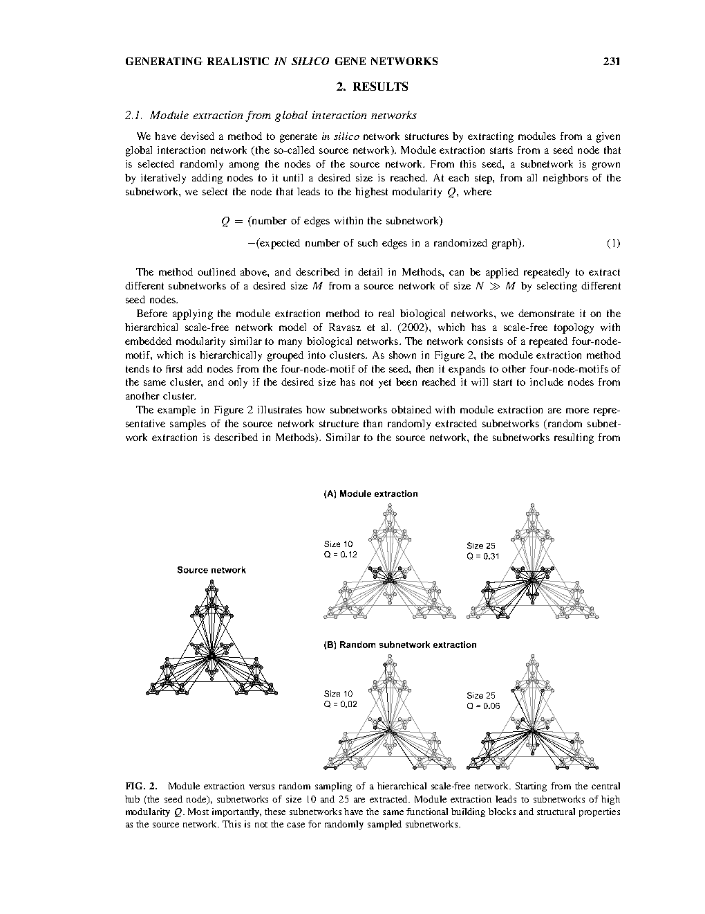
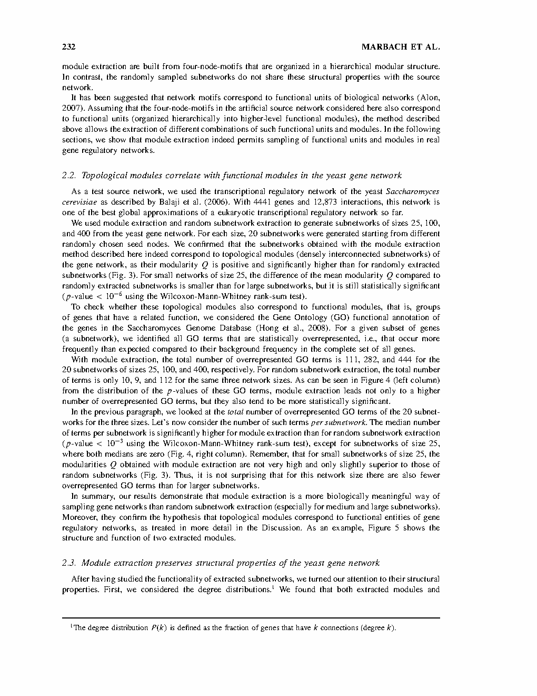

| Title | Generating Realistic In Silico Gene Networks for Performance Assessment of Reverse Engineering Methods（生成逼真的计算机模拟基因网络用于反向工程方法的性能评估） |
| Authors | Daniel Marbach、Thomas Schaffter、Claudio Mattiussi、Dario Floreano（corresponding） |
| Affiliation | EPFL（瑞士洛桑联邦理工学院），Laboratory of Intelligent Systems（智能系统实验室） |
| Venue | Journal of Computational Biology，2009年，Vol. 16, No. 2, pp. 229–239 |
| DOI / Links | 10.1089/cmb.2008.09TT | 基金：Swiss National Science Foundation (200021-112060) + SystemsX.ch (WingX) |
| TL;DR | 提出一种从已知生物调控网络（酵母转录调控网络）中提取拓扑模块来生成计算机模拟基因网络的方法，替代传统随机图模型，使反向工程算法（reverse engineering）的基准测试更加逼真。该方法被选为 DREAM3 国际基因网络反向工程挑战赛的 gold-standard 网络生成方法。 |
| Inspiration Source | → What Insight It Inspired | Type |
|---|---|---|
| 随机图模型的局限性（Erdos-Renyi / Scale-free 无法建模 modularity 和 network motifs） | → 不应继续构造更复杂的随机图模型（会引入不易论证的偏差），而应直接从真实生物网络结构出发，保留其完整拓扑特征 | 策略 |
| 网络模块化理论（Newman, 2006 的 modularity Q）与生物学中"拓扑模块 = 功能模块"的假说 | → 使用 modularity Q 作为提取子网络的贪心准则，确保提取出的子网络具有高模块度，且与真实功能模块高度相关 | 数学 |
| DREAM 挑战赛的基准设计需求——需要多个不同规模但同等生物真实的 gold-standard 网络 | → 通过随机选择种子节点 + 迭代贪心扩展，可以在同一个 source network 上生成多样化（非重复）的子网络 | 架构 |
| 酵母（S. cerevisiae）转录调控网络是当时最完整的真核生物调控网络（4441 genes, 12873 interactions, Balaji et al. 2006） | → 选择酵母网络作为 source network，因为它规模足够大、注释完善（SGD GO annotation），且代表性广泛 | 数据 |
flowchart TB
subgraph INPUT["输入: 生物先验知识"]
SOURCE["Source Network: 酵母转录调控网络 · 4441 genes · 12873 interactions"]
GO["GO Annotations: SGD 功能注释数据库"]
end
subgraph EXTRACT["模块提取: Greedy Modularity Expansion"]
SEED["随机种子节点选择"]
GROW["迭代扩展: 每一步选择使 Q 最大化的邻居节点"]
STOP["终止条件: 子网络达到预设大小 M (25/100/400)"]
end
subgraph VALIDATE["双重验证"]
FUNC["功能验证: GO term 富集分析 · p-value with Bonferroni correction"]
STRUC["结构验证: Degree distribution · Triad significance profile (SP)"]
end
subgraph DEPLOY["部署: DREAM3 基准"]
GOLD["5 个 gold-standard 网络 · 大小 10/50/100"]
HIDE["隐藏边集: 参与者不可见 · 仅用于最终评估"]
EVAL["评估: 精确率-召回率曲线 · ROC · 算法排名"]
end
SOURCE --> SEED
SEED --> GROW --> STOP
STOP --> FUNC
STOP --> STRUC
FUNC --> GOLD
STRUC --> GOLD
GOLD --> HIDE --> EVAL
GO -.->|"提供功能真值"| FUNC
SOURCE -.->|"提供拓扑真值"| STRUC
EVAL -.->|"反馈: 不同算法对模块结构敏感"| STOP
classDef input fill:#fef7ed,stroke:#f59e0b,stroke-width:2px,color:#92400e
classDef extract fill:#e8f0fe,stroke:#3b82f6,stroke-width:2px,color:#1d4ed8
classDef validate fill:#f0ebfd,stroke:#8b5cf6,stroke-width:2px,color:#6d28d9
classDef deploy fill:#e6f7ee,stroke:#10b981,stroke-width:2px,color:#047857
class SOURCE,GO input
class SEED,GROW,STOP extract
class FUNC,STRUC validate
class GOLD,HIDE,EVAL deploy
flowchart LR
subgraph MOD["Module Extraction (本文)"]
direction TB
M1["种子节点: 全局网络中随机选取"]
M2["贪心扩展: 每次选Q最大的邻居"]
M3["子网络: 高模块度 · 保留原网络功能模块 · 保留motif"]
end
subgraph RND["Random Extraction (Van den Bulcke et al.)"]
direction TB
R1["种子节点: 全局网络中随机选取"]
R2["随机扩展: 从邻居中随机选择"]
R3["子网络: 低模块度 · 丧失功能模块 · motif特征相反"]
end
subgraph COMPARE["对比维度"]
direction TB
C1["Modularity Q: 正且显著高 vs 接近零"]
C2["GO terms 数量: 282 vs 9 (size=100)"]
C3["Degree dist: 相似 (r=0.92 vs r=0.93)"]
C4["Motif SP: 落入1σ vs 完全相反"]
end
MOD --> COMPARE
RND --> COMPARE
classDef mod fill:#e8f0fe,stroke:#3b82f6,stroke-width:2px,color:#1d4ed8
classDef rnd fill:#ffe4e6,stroke:#f43f5e,stroke-width:2px,color:#be123c
classDef compare fill:#e6f7ee,stroke:#10b981,stroke-width:2px,color:#047857
class M1,M2,M3 mod
class R1,R2,R3 rnd
class C1,C2,C3,C4 compare
| 类别 | 内容 | 维度 |
|---|---|---|
| 输入 | 已知的全局基因调控网络（source network）+ 基因功能注释数据库（GO） | 有向图：N nodes × E edges；GO：层次化术语树 |
| 输出 | 具有已知真值结构的 benchmark 子网络 + 功能与结构验证报告 | 子网大小可配（10/25/50/100/400）、可重复生成多个不同子网 |
| 目标 | 生成的子网络必须同时满足：（1）拓扑模块性（高 Q），（2）功能一致性（GO 富集），（3）结构保真度（度分布 + motif SP 与原网络一致） | 对比基线 = 随机子网络采样（Van den Bulcke et al. 2006） |
这是一个数据生成方法学研究——不是设计新的反向工程算法，而是设计更公平、更逼真的算法评测基准。核心贡献在于认识到"基准的分布决定了排名的意义"这一元方法论问题。类比于机器学习领域 ImageNet 替代 MNIST 的范式升级：更接近真实数据分布的基准才能选出在真实任务中表现最好的模型。
⚠ 表头用英文，正文用中文
| Prior Method | Core Idea | Why It Fails |
|---|---|---|
| Erdos-Renyi Random Graph（均匀随机图） | 以固定概率 p 随机创建每条边，生成同质网络 | 度分布为泊松分布——与真实基因网络的幂律分布完全不同。无 module、无 motif、无 hub 结构。DREAM2 中获胜算法在此类图上表现远优于 scale-free 图，说明算法排名被基准结构绑架。 |
| Scale-Free Random Graph（Albert-Barabasi 模型） | 通过优先连接机制生成"富者愈富"的度分布，近似真实网络的无标度特性 | 仅近似度分布，不建模 modularity（Ravasz et al. 2002 证明生物网络是层次化模块结构的，非单纯幂律）、不产生 network motifs（统计上过表达的调控回路）。本质上只匹配一阶统计量，遗漏了高阶结构。 |
| Random Subnetwork Extraction（Van den Bulcke et al. 2006） | 从全局生物网络中随机抽取连通子网络作为基准 | 随机采样破坏了原网络的模块结构——采样出的子网络虽然度分布与原网络相似，但 modularity 接近零，motif significance profile 与原网络完全相反。功能注释富集也极少（size=100 时仅 9 个 GO terms vs 模块提取的 282 个）。 |
| Single-Network Extraction（Rice et al. 2005） | 从 E. coli 全局转录网络中提取一个完整的 in silico 网络 | 只生成一个网络——无法收集统计量以评估算法的平均性能和方差。reverse engineering 方法在不同网络上表现差异极大（如 DREAM2 中的跨网络差距），单一网络无法给出可靠的性能估计。 |
本文的核心方法是基于模块度（modularity Q）的贪心子网络扩展算法。算法从 source network 中随机选择一个种子节点，然后迭代地将使 modularity Q 最大化的邻居节点加入子网络，直到达到预设大小 M。关键在于 modularity Q 的定义和计算——它是子网络内部边密度与随机期望的差值。
LaTeX rendered by MathJax. 显示公式用 $$...$$，行内公式用 $...$。符号解释用中文。
| 参数 | 取值 | 含义 | 为什么取这个值 |
|---|---|---|---|
| 子网络大小 $M$ | 25, 100, 400 | 子网络包含的基因数 | 覆盖从小（可手动验证）到大（接近实际反向工程任务）的范围。DREAM3 额外提供 size 10 和 50 的黄金标准 |
| Source network | 酵母转录调控网络（Balaji et al. 2006） | 已知全局调控网络，4441 genes, 12873 interactions | 酵母是当时最完整的真核调控网络，有高质量的功能注释（SGD GO），网络规模足够大 |
| 多样性参数 $k\%$ | 0%（纯贪心）至 100%（纯随机） | 在选择邻居时，从 top $k\%$ 的候选中随机选择 | $k=0$ 是纯粹的模块提取，$k=100$ 退化为随机采样。通过调节 $k$ 可以在模块纯度和样本多样性之间权衡 |
| 随机化网络 Ensemble 大小 | ~1000 | 用于计算 motif Z-score 的参考分布所需的随机网络数量 | 遵循 Milo et al. (2004) 的标准做法，1000 个随机网络足以给出稳定的 Z-score 估计 |
| GO 富集的 significance 阈值 | Bonferroni 校正后 p < 0.05 | 判断 GO term 是否在子网络中显著富集 | 基因网络涉及大量 GO terms（数千个），需要多重检验校正以避免假阳性 |
理解本文需要掌握三个核心概念：模块度（为什么 $Q > 0$ 意味着模块结构）、network motifs（为什么它们是功能的建筑块）、以及这些概念如何共同支撑"拓扑模块 = 功能模块"的核心假说。
为什么 Q-maximization 能提取功能模块？这涉及网络生物学的一个核心假说：功能相关的基因倾向于在转录调控网络中形成密集互连的模块（Hartwell et al., 1999; Ravasz et al., 2002）。如果这个假说成立，那么贪心最大化 Q（拓扑标准）自然会产生功能富集的子网络（功能标准）——本文的实验正是通过 GO 富集分析验证了这一假说。
阶段 1 — 局部填充：从种子节点出发，首先填满种子所在的四节点 motif（如 Fig. 2 的层次化网络示例）
阶段 2 — 模块扩展：扩展到同一 cluster 内的其他 motif
阶段 3 — 跨模块扩展：仅在预设大小未达到时才扩展到相邻 cluster
结果：子网络在不同尺度上保留了层次化模块组织——这是随机采样完全做不到的。
阶段 1：随机选择邻居——不考虑对方是否与子网络功能相关
阶段 2：继续随机选择——子网络可能跨越多个不相干的功能模块
阶段 3：生成的子网络是多个模块碎片的随机拼接
结果：度分布虽然对上了（因为度是节点自身属性），但 motif 结构和功能组织完全丢失。
📷 论文原图截图。图片保存至 figures/ 子目录。

📷 请将截图保存为figures/fig1.png本图展示了：(A) 真实生物基因网络——其完整拓扑结构未知或仅部分已知，因此无法系统性验证反向工程算法的预测结果（"你不知道你不知道的那些边"）。(B) In silico 网络——结构完全已知（实验者设计的），因此可以精确计算每条预测边的真假，给出精确率-召回率曲线和 ROC 分析。本文解决的问题正是如何让 (B) 中的 in silico 网络尽可能地像 (A) 中的真实网络——即最小化两个分布之间的差异。

📷 请将截图保存为figures/fig2.png本图展示了：在层次化 scale-free 网络（Ravasz et al. 2002 模型）上，从中心 hub 出发提取大小为 10 和 25 的子网络。模块提取（左列）产生的子网络保持了原网络的四节点 motif 和层次化模块组织。随机采样（右列）则完全丧失了这些结构——子网络是没有组织原则的随机节点集合。

📷 请将截图保存为figures/fig3.png关键验证结果：在酵母网络上，模块提取的子网络具有（Figs. 3-7）：
| 数据问题 | 潜在困难 | 严重程度 |
|---|---|---|
| Source network 的不完整性（missing edges） | 从已知网络提取模块 → 基准网络继承所有未知边作为"真负"——这系统性地低估了推断算法的假阳性率（算法预测了真边但被误标为假阳性）。这是所有基于已知网络做 benchmark 的固有缺陷 | ★★★★★ |
| 研究偏差（study bias） | 热门基因（如 p53、MYC）在数据库中连接更多，模块提取倾向于产生以这些基因为中心的子网络——导致基准测试可能系统性地偏袒"擅长发现 hub 周边连接"的算法 | ★★★★ |
| 单一物种的代表性 | 酵母是单细胞真核生物，其调控逻辑（以直接 TF-promoter 结合为主）与哺乳动物（长程增强子、绝缘子、3D 染色质折叠）显著不同。仅在酵母上验证的算法迁移到人类数据时可能表现不佳 | ★★★★ |
| 模块提取的参数敏感性 | Q 最大化的贪心算法是确定性的（给定种子 → 给定结果），虽然可以通过 k% 随机性调节多样性，但最优 k% 值依赖于具体 source network 和子网络大小——没有理论指导如何选择 | ★★★ |
| 参考文献 | 为什么重要 |
|---|---|
| Stolovitzky et al. (2007) — Dialogue on Reverse Engineering Assessment and Methods (DREAM). Ann. N. Y. Acad. Sci. 1115, 1–22 | DREAM 挑战赛的原始论文——理解本文方法的应用场景和评测框架。DREAM 是系统生物学领域最具影响力的算法竞赛，类比于 ImageNet 之于计算机视觉。 |
| Ravasz et al. (2002) — Hierarchical organization of modularity in metabolic networks. Science 297, 1551–1555 | 证明了生物网络具有层次化模块结构——这是本文"模块提取"的生物学基础。如果网络没有模块，module extraction 就没有意义。 |
| Alon (2007) — Network motifs: theory and experimental approaches. Nat. Rev. Genet. 8, 450–461 | Network motif 理论的经典综述——motif 是基因调控网络的功能建筑块假说。本文用 motif SP 作为结构保真度的关键验证指标。 |
| Newman (2006) — Modularity and community structure in networks. Proc. Natl. Acad. Sci. 103, 8577–8582 | Modularity Q 的经典论文——本文算法每一步的优化目标。理解 Q 的数学定义和物理含义对于理解整个方法至关重要。 |